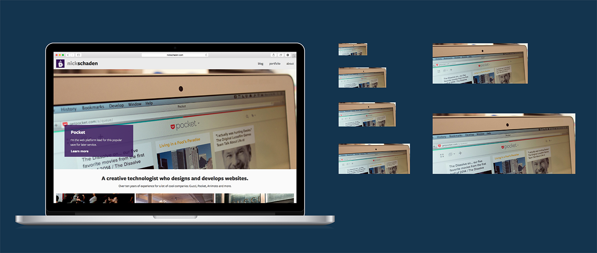

没有哪个成功的Web项目是在设计师和开发无法流畅沟通的前提下搞定的，协作才是做好项目的基础。
我曾看到经验丰富的设计师和开发者因为沟通不畅和误会导致项目失败，也见过新手设计师和开发团队一起通过高效协同，做出惊艳无比的设计项目。在项目之初充分的磨合，能让项目在后续的快速迭代中更为流畅。足够和谐的沟通不仅有利于工作，而且能让整个团队保持情绪的稳定性。
而在响应式网页设计项目中，设计师和开发者之间的沟通流畅与否，就显得更为重要。
设计响应式网站的时候，整个团队必须为大量不同尺寸屏幕的设备充分考虑，习惯于“像素精准”的设计师和开发者需要对流动的界面和大量的不同比例的设备有充分的准备。简而言之，响应式设计使得整个项目交付面临着大量的不确定因素，这也是响应式网站项目的难点。
希望接下来的5个小技巧，能帮各个团队顺利搞定这种项目中的沟通障碍和技术问题。
1、优先专注“极端”尺寸

当你面对着手机屏幕和桌面端显示器这两种极端的屏幕尺寸之时，疑问会自然而然出现。有的设计师打一开始就从动态的视角开始他们的设计，但是绝大多数的设计师仍然是从静态的页面开始着手设计的：选择一个固定的高度和宽度，绘制相应的草图或者视觉稿。
这样一来，就引出了几个问题：你的开发团队优先考虑什么尺寸？设计团队首先交付的高保真视觉稿是哪个尺寸的？从技术限制的角度出发，你应该优先考虑什么设备？
我始终推荐从用户最基本的“极端”尺寸开始考虑，推荐当前（2015年）常用设备中最小和最大的情况：
-
320 x 568 px （iPhone 5 ，由于它是视网膜屏幕，平时我们是按照72dpi来设计，但是iPhone 5的显示实际是144px，所以我们给出了这样的一个设计尺寸。作为UI设计师的你应该很清楚@2x和@3x的问题）
-
1600×1000 px （桌面显示器的常见尺寸）
当然，你的用户的实际情况可能略有不同，稍加调查，确定“极端情况”。
“刚刚开始响应式网页项目的时候，从用户最常见的最大和最小尺寸设计着手。”
当你面对最小的屏幕的时候，你需要在小屏幕上呈现出最重要的内容，如何选取是一件颇为费神的事情。但是面对大屏幕的时候，你所思考的事情又是截然相反的：怎么展示内容才算是过多？分栏是否因太宽降低了易读性？如何选取元素才能避免这样的问题？最后，面对两个不同尺寸的界面，你还要考虑它们所涉及的输入方式，最小的屏幕上通常是触摸屏和虚拟键盘，最大的屏幕上，绝大多数时候是传统的键盘鼠标。
这里最重要的事情可能是你需要一次挑选两个界面尺寸来做，而不是传统的针对一个屏幕设计，然后完成剩下的部分。设计师和开发者在这个问题上出现分歧，对后续的影响是非常大的。
2、讨论不同断点之间内容布局
在日常的网页设计中，大家对于静态的线框图投注了如此之多的关注，但是在做响应式设计的时候，应该始终谨记页面内的布局是流动的。这也就意味着，你网页的用户绝大多属时候所体验到的页面其实是它的“中间态”。所以，你必须考虑随着屏幕尺寸大小的转变，布局设计的每一个调整和改变。比如，当屏幕尺寸变小的时候，文本内容需要收缩，并且和混排的图片会与文章缩到一栏中去。
这些适配能与不能、该与不该的问题上，尽量不要同你的开发团队去“假设”或者“推测”。积极主动地去确定这些信息，在你负责开发的同事还没有做太多之前，和他们达成共识。对于复杂的布局改变，事先绘制先框图或者草图来单独说明，是非常明智的选择。对于一些不那么重要的特性，通过简短的讨论或者电子邮件通知就足够了。
3、对于图片素材的处理策略早做准备

响应式网页中的图片，通常是由一组多个不同尺寸的图片组成的。比如我的个人网站首页顶部的大图，就是由一组6个图片组成的，分辨率和尺寸各不相同，确保不同的设备都能匹配上对应的图片。
图片格式和尺寸通常会让团队内的设计师和开发者之间产生隔阂。你可以用PNG，也可以用JPG，图标字体和SVG也会在网页上很好的运用。也就是说，并没有一个正确的答案：用什么更多是取决于可用的内容和资源本身。但是重要的地方在于，大家要在使用格式上达成共识，并且坚持使用下去。另外，你可能也想钻研出一套通用的图片尺寸体系，运用在不同的项目中。
不过对于现代的响应式网页设计，这仅仅只是一个起点。现在要做你至少需要两套图片素材，一种是给普通PPI的屏幕所设计，一种是给高PPI的视网膜屏所准备的。更完备的响应式网页，对于图集和素材的要求更高，细分更多，针对性更强。
尽量避免将响应式图片格式的筛选决策留到项目后期。
最起码，你得针对不同像素密度的屏幕作出基本的区分。仔细读一下这篇关于srcset的文章，或者使用Picturefill这样的工具来确保跨浏览器支持。如果你觉得整个方案不堪重负，那么不妨从小的部分开始做起。逐步调整图片元素的srcset属性就是一个不错的开始，在这个过程中，你会逐步看到网页的响应越来越靠谱。
4、从基础元素开始思考，使用模块化设计
我的响应式网页设计流程深深地受到了Brad Frost 的Atomic Web Design和Jonathan Snook 的SMACSS的影响。两个框架都依靠小而可复用的基础组件来实现强大的网络架构。
所以，在与开发者交接的过程中，我会优先专注小而可复用的组件，因为它们能给不同平台不同设备带来相同的用户体验和视觉效果。这种一致性会更容易为开发团队所消化吸收。而且，小组件在不同页面之间的复用性也非常强，所以，如果你设计出了一套高效的方案，今后还会有用武之地。
想象一下，你正在设计一个带有大标题、高清大图和表单的注册页面。由于网页是响应式的，所以所有这些元素都会随着设备和屏幕的转换而变化尺寸。那么在项目研发早期，应该同开发团队一起钻研，敲定页面所涉及的各个细节。它看起来应该是什么样子？用什么样的验证机制？如果要输入表单，如何配合触摸屏和传统的键鼠？
5、让开发者给视觉和体验设计做反馈
有些设计师在产品设计会议、可用性设计环节和其他的沟通环节不让开发者参与或提供反馈。这种放任和封闭是错的。要知道，经验丰富的开发者在产品、体验和设计领域同样有着极为丰富的知识。让他们参与到这些环节中，能让产品更加成熟。前端和设计师在技能上的重叠就更多了。
越来越多的设计师开始自己写代码了，开发者也逐渐习惯于制作快速原型、先框图，并且也会在私底下恶补美学和设计类的知识。响应式网页设计的出现，使得两个职业之间的交叠越来越多，加剧了这一趋势。虽然没有设计师的头衔挂在开发者头上，但是他们对于设计往往能说出惊人之语，发人深省。
当然，不同的角色和职责的划分依然是极为重要的。但是稍微调整一些小步骤，确实能显著提高最终产品。所以，你做下一轮产品可用性测试的时候，不妨带着开发者一起来讨论。
结语
所有这五个技巧都需要实现计划，并且不停补充。绝大多数团队都将注意力放在产品的发布和卡Deadline上，这个阶段再来考虑这些问题，不利于产品，也不适合此刻团队内的设计师和开发者。


 在线客服
在线客服 QQ咨询
QQ咨询 010-85951131
010-85951131